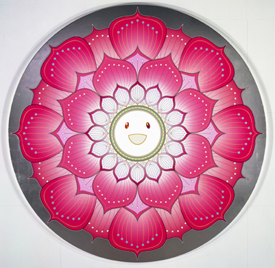

|
“Sumérgete en aquella agua y experimentarás el secreto de mi Maya. Se sumergió Narada en la charca y salió… en forma de una muchacha.”
La visión del mundo como Maya se instaló en la India durante el primer milenio A.C.
Desde el punto de vista de la cosmología hindú, la existencia individual se torna en algo irreal si descubrimos el mecanismo de Maya. Lo que nos parecía importante se convierte en un fugaz momento de la vida del universo. Es un instante insignificante en comparación con las eras cósmicas.
Cuando ampliamos nuestra perspectiva alcanzamos otro nivel de conciencia observamos lo mismo de antes de una forma muy diferente. La valoración cambia totalmente. Y lo más importante, aquello que creemos que es permanente, empezamos a considerarlo como algo fluido, cambiante. La mente siempre ha buscado aferrarse a algo sólido, constante.
Para la mentalidad hindú, lo fluido, lo transitorio, tiene que ver con lo irreal, y por lo tanto lo eterno sería lo real.
Creemos que nuestra vida es real hasta que nos paramos a pensar y lo ponemos todo en duda, lo que nos dicen los sentidos, etc. Entonces es cuando podemos llegar a sentir la vida cono algo irreal. Cuando nos damos cuenta de que nuestra realidad es la construcción que ha hecho nuestro yo, abrazamos la noción de Maya. Para nosotros Maya sería la existencia, el mundo que conocemos.
Maya significa “arte”. Esto nos da la pista de lo artificial que puede llegar a ser la existencia. Maya también es medición, ilusión, creación, despliegue de formas y cualquier artificio que sirva para engañar. Por ejemplo, la Maya de los dioses es la capacidad que tienen de adoptar una forma u otra para presentarse ante los humanos.
No hay que olvidar que los dioses son también la consecuencia de un Maya superior.
Todos los universos y planos del ser son manifestaciones de un eterno por medio de Maya.
Maya es también el dinamismo de la Sustancia universal. Es efecto y causa a un mismo tiempo. El mundo, el yo o cualquier cosa a la que nos aferramos es Maya y por lo tanto algún día se desvanecerá, caerá el velo de la apariencia. La realidad es un producto del individuo. Y este producto varía según las limitaciones de la mente que le dio vida.
El hindú, al igual que Indra, busca liberarse de toda apariencia y encierro que su mente haya creado.
Las aguas primordiales son una materialización del Maya. Las aguas cósmicas son nuestro origen y nuestro final. En ellas se da la autotransformación, el abismo produce formas individualizadas, las nutre y las disuelve. La extinción final es el Nirvana.
Podemos caer en las aguas divinas por accidente o por iniciativa propia para conocer los secretos de Maya. El agua es el arquetipo que nos inicia en nuestro subconsciente.
No somos lo que creemos ser.
Si conseguimos salir de la existencia, nos toparíamos con la Nada. Para “sobrevivirla” deberemos integrar la enseñanza de los opuestos. La creación y la destrucción eternas. La Maya es ese ciclo de producción y eliminación.
Seremos habitantes de las dos esferas si despertamos a la ilusión. El pranayama es la manifestación del yo libre y divino. La canción respirada dice: “Esto soy yo”.

|
 RSS
RSS